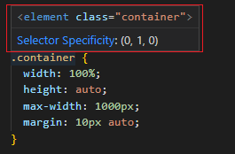

Hi
In this section I will note to important things from Jonas Schmedtmann
udemy course that i just newly learned or noticed that css features.
So this web page will be very basic and short summary the this course
:: or : ?
Psedou-elements
A CSS pseudo-element is a keyword added to a selector that lets you
style a specific part of the selected element(s).
MDN
selector ::
pseudo-element {
property: value;
}
Example
p::firt-letter {. . .}
p::first-line {. . .}
a::after {. . .}
Psedou-classes
A CSS pseudo-class is a keyword added to a selector that specifies a
special state of the selected element(s).
MDN
selector ::
pseudo-class {
property: value;
}
Example
button :: hover {. . .}
p :: focus {. . .}
myDiv :: first-child {. . .}
myDiv :: last-child {. . .}
myDiv :: nth-child(idx) {. . .}
a :: visited {. . .}
Priority in Css
In css there 6 priority(specificity) that decided which css rule
applied.
MDN
Highest
- !important
- InlineStyle
- ID selector
- Class selector
- Element selector
- Universal selector
Lowest
Also vscode help this issue when hovered
selector
(X, Y, Z)
Consider that X is the number of ID selectors in the selector
Y represents the number of class selectors, attribute selectors, and
pseudo-classes
Z represents the number of type selectors and pseudo-elements

Example 1: specificity (0-0-1)
div { . . . }
Example 2: specificity (0-0-2)
div p { . . . }
Example 3: specificity (0-0-5)
div p a ul li { . . . }
Example 4: specificity (0-1-0)
.container { . . . }
Example 5: specificity (0-1-1)
.container p { . . . }
Example 7: specificity (1-0-0)
#main-header { . . . }
Example 6: specificity (1-1-0)
#main-header:hover { . . . }
i will keep goin adding.